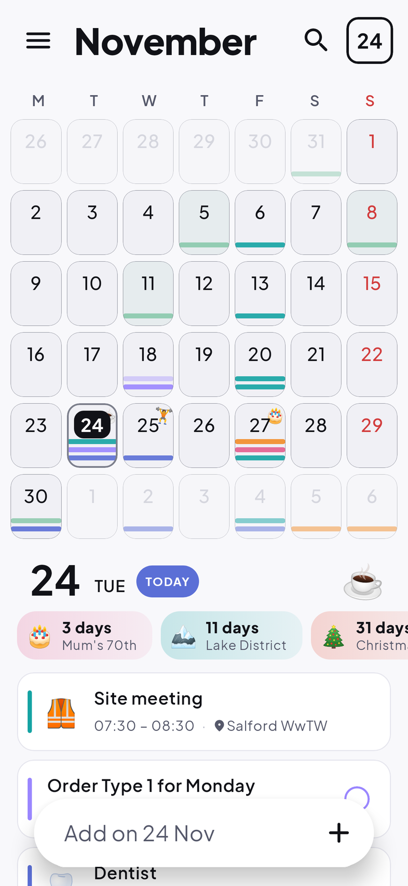
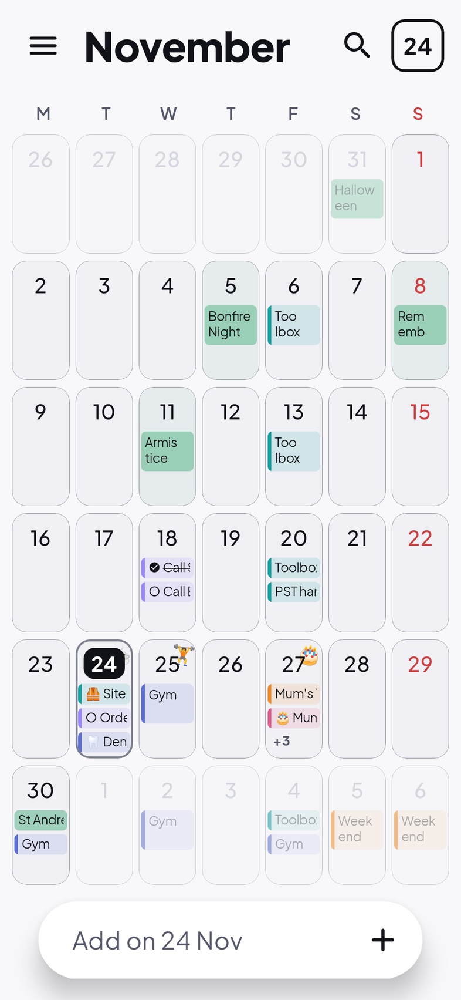
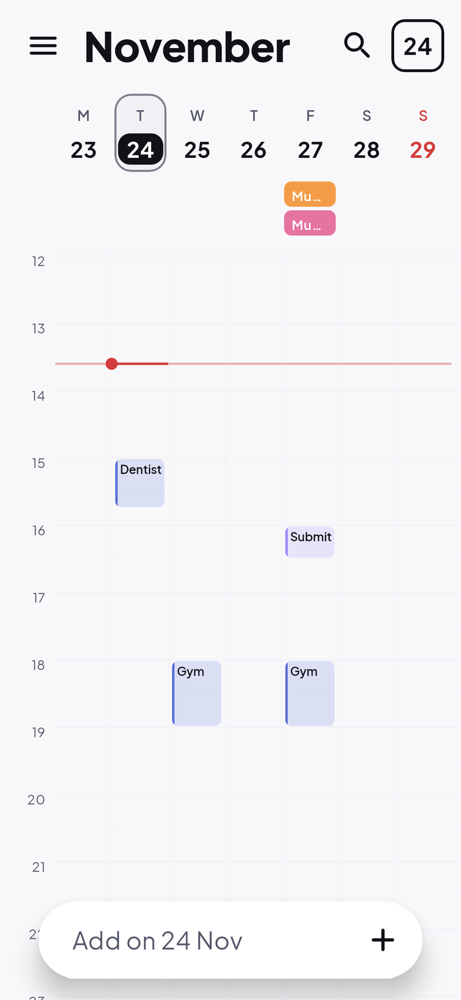
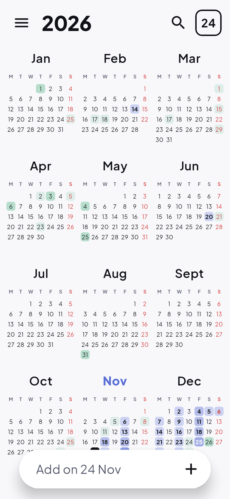
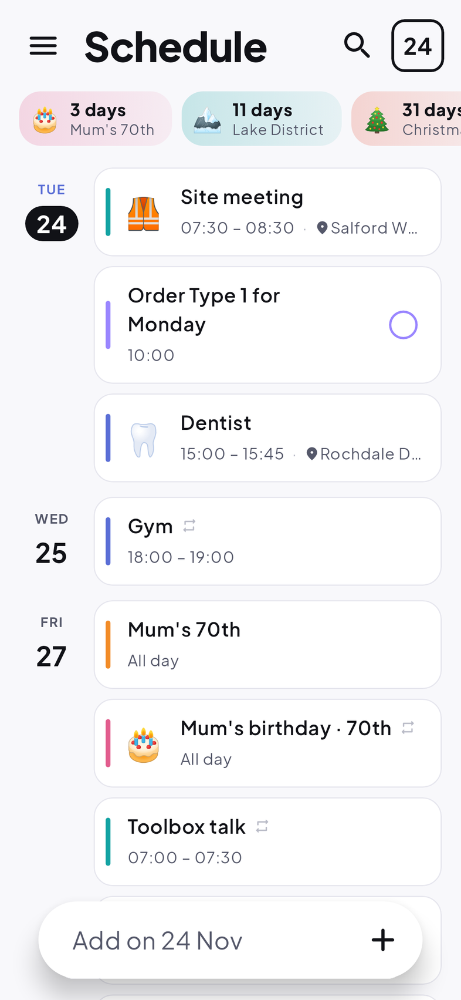
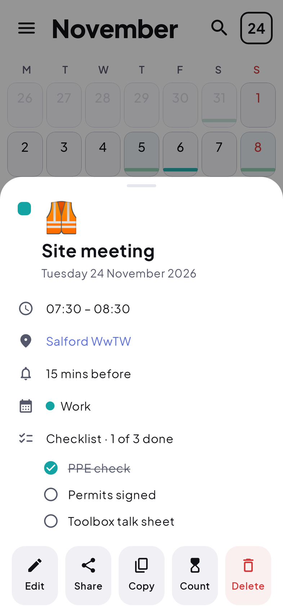
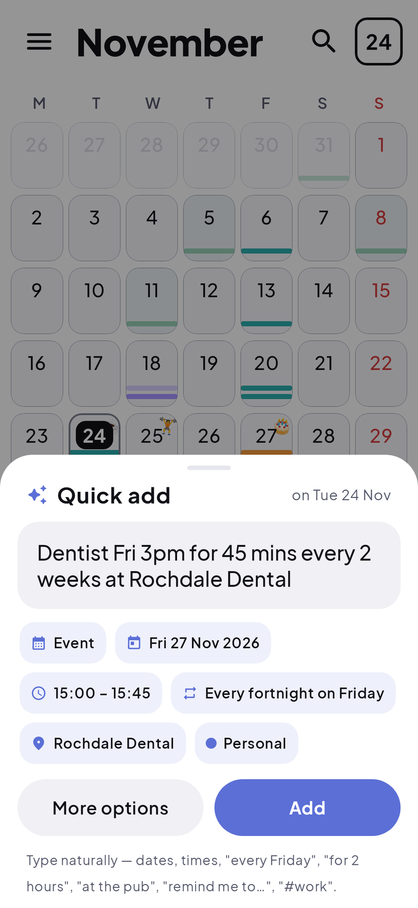
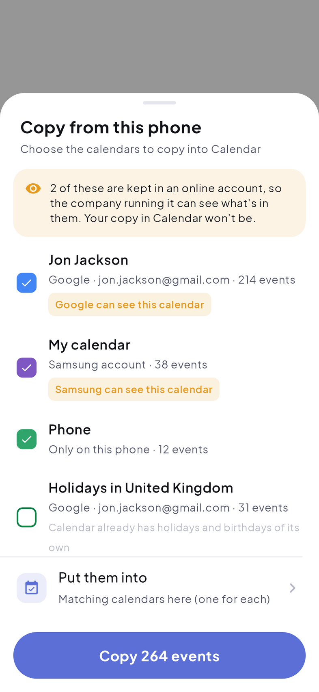
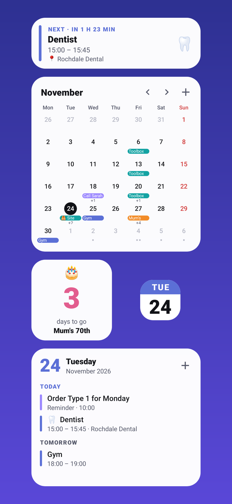
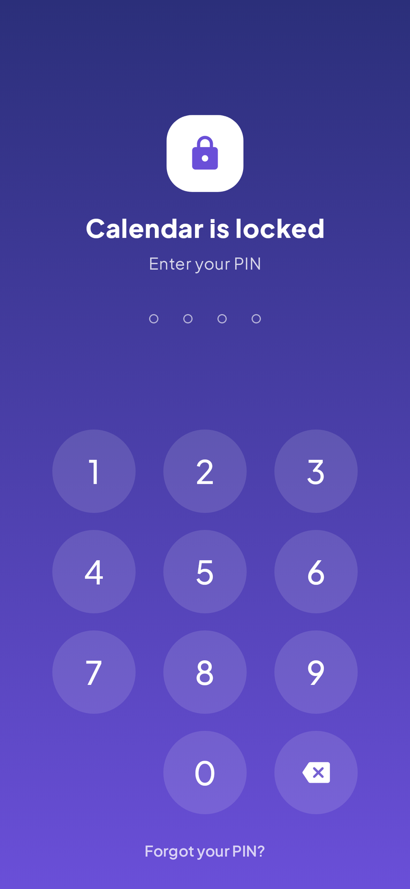

Your calendar. Nobody else's.
Calendar does everything a phone calendar should, and a lot more: every view from a whole year to a single day, events and reminders that really ring, holidays, birthdays with ages, countdowns, shift patterns and widgets.
It is free, with no adverts and nothing to unlock. There is no account, and the app cannot go online, so Google, Samsung and everyone else are kept out of your diary.
Download for AndroidHow to install
- Version 1.0.0
- Android 8 or later
- 24.7 MB
Free, with nothing to unlock. No adverts, no account with the developer, no tracking. Compare or read the release notes.
Chrome may say the file might be harmful. It shows this for app files that do not come from Google Play. Choose Download anyway.

- Not trackedNot by Google, not by Samsung, not by anyone.
- No internetThe app has no permission to go online.
- EncryptedLocked on the phone with AES-256.
- No advertsNone in the app and none on this site.
A look inside
These are the real screens, drawn from the app's own code with made-up events. Swipe or scroll sideways to see them all.









How it works
Bring your calendar over once, then everything stays on your phone.
Bring it over
Copy events from Google, Samsung or Outlook calendars on your phone, or open a calendar file. Calendar keeps its own private copy.
Plan your days
Tap a day to add something, or type it the way you would say it. Drag items to move them and get reminded when it matters.
Keep it safe
Turn on encrypted daily backups to a folder you choose, and restore them on any phone with your password.
Everything is in, and all of it is free
Nothing below is held back for a paid tier, because there is no paid tier.
Views
- Every way to see your time
- Year with a busy-day heat map, month (compact or expanded), week, three days, day and schedule. Views zoom into each other from where you tap.
- Drag, drop and resize
- Hold an item in the week or day view and drag it to a new time or day. Tap it and drag its handle to change when it ends. Undo is always one tap away.
- Quick add in plain English
- Type “Dentist next Tue 3pm at Rochdale Dental” or “Remind me to call Sam tomorrow 9am” and Calendar fills in the details.
- Search everything
- Search titles, places and notes, with filters for events, reminders, calendars and dates.
Events and reminders
- Reminders that ring
- Full-screen reminders with a short sound, over the lock screen if you want, with Snooze and Done. Events can alert by notification.
- Every kind of repeat
- Every weekday, the last Friday of the month, every second week, yearly, and change just one, this and following, or all.
- Calendars and colours
- As many calendars and reminder lists as you like, each with its own colour, and colours for single events too.
- Checklists, notes and files
- Add a checklist, notes, a link or encrypted photos and files to any event.
Extras
- Bank holidays, worked out here
- England and Wales by default, with Scotland, Northern Ireland, Ireland and nine other countries in Settings. Nothing is downloaded.
- Birthdays with ages
- Birthdays and anniversaries show the age they turn. Reading them from your contacts is there if you switch it on.
- Countdowns
- Count down to holidays, trips and big days, shown at the top of your day and on a widget.
- Shift patterns
- Add your rota once, from 4 on 4 off to continental, and see the hours you work each week and month. Off until you switch it on.
- Stickers
- Put a sticker on a day or an event, or make your own from a photo: Calendar cuts out the subject on the phone.
- Templates
- Save an event you add often and add it again with one tap.
Moving in and out
- Copy from Google or Samsung
- Calendar copies the calendars already on your phone once. If Google, Samsung or another company can see one of them, it tells you, politely, before it copies.
- Calendar files
- Open .ics files from Google Calendar, Outlook or Apple Calendar, and export your own to any calendar app.
- Share by QR code
- Show an event as a QR code and another phone running Calendar scans it in. Or send it as a file or as text.
Privacy and safety
- App lock
- A PIN, with fingerprint or face if your phone has it. Off until you turn it on.
- Privacy screen
- Hide Calendar in the recent apps screen and block screenshots.
- Encrypted backups
- Daily backups to a folder you choose, sealed with your password. Restore them on this phone or a new one.
Home screen
- Five widgets
- This month, today and coming up, the next event, a countdown and a one-square date icon.
- Private widgets
- One switch hides titles on the home screen and shows only times and colours.
- Five themes
- Daylight, Dusk, Obsidian (pure black), Ocean and Sandstone, or follow your phone's light and dark setting.
Your diary is your business
No internet at all
Calendar has no permission to go online. It cannot send your events anywhere, or let anyone in.
Encrypted on the phone
Everything is kept in a database locked with AES-256, with the key held by the phone's secure hardware, and left out of cloud backups.
Not tracked by Google or Samsung
No account, no syncing, no analytics. When you copy a calendar in, your copy stays on the phone.
Installing and updating
Calendar is not on Google Play, so your phone asks a couple of extra questions the first time.
Download the app file
Tap Download on your phone. The file is called Calendar.apk and is about 24.7 MB. If Chrome says the file might be harmful, choose Download anyway.
Allow the install
Open the file. The first time, Android asks you to allow your browser to install apps. Allow it, go back and tap Install. If Google Play Protect steps in, choose More details, then Install anyway.
Updating later
Calendar never goes online, so it cannot check for updates itself. Settings, Privacy and about, Check for a newer version opens the release page: install the new file over the old one and everything in your calendar is kept.
Version 1.0.0, released 24 November 2026. See the release notes, or check your download.
Questions
Is Calendar really free?
Yes. There is no paid version, no subscription, no trial and no adverts, and nothing in the app is locked.
Is it on Google Play?
No. Calendar is a personal project and is downloaded from this site as an Android app file. It needs Android 8 or later, which covers almost every phone in use.
Does it need the internet?
No. The app does not ask Android for internet access at all, so it cannot go online. Bank holidays are worked out on the phone, and the photo sticker cut-out runs on the phone too.
Can I bring my Google or Samsung calendar?
Yes. In Import and export, tap From this phone's calendars and pick the ones to copy. It is a one-off copy: Calendar does not stay connected, and nothing you add in Calendar goes back to Google or Samsung. You can also open .ics files exported from Google Calendar, Outlook or Apple.
Why does it say Google or Samsung can see a calendar?
A calendar kept in a Google, Samsung or work account is stored on that company's servers, so they can see it. Calendar tells you before copying. Your copy in Calendar is private; the originals stay where they were until you delete them.
Can I use it on two phones, or share a calendar with family?
There is no syncing, because nothing goes online. You can send events by QR code or calendar file, and move everything to a new phone with an encrypted backup.
Where are my events kept?
Only on your phone, in an encrypted database whose key is held by the phone's secure hardware. Calendar is left out of Google and Samsung cloud backups; use its own encrypted backups instead.
What if I forget my PIN or backup password?
Neither can be recovered, by anyone, because they never leave the phone. A forgotten PIN can be cleared by erasing Calendar and restoring a backup. A forgotten backup password means making a new one and a new backup.
Why might a reminder be late?
Some phones hold back alarms to save battery. Allow notifications and full-screen reminders when Settings asks, and leave Calendar out of battery saving if your phone offers it.
Who made it?
Calendar is made by Jonathan Jackson, an independent developer in the United Kingdom. It is not connected with Samsung, Google or any other app maker.
Your calendar. Nobody else's.
Free, with no adverts and nothing to unlock. Made by the developer of several other free Android apps: see them all.